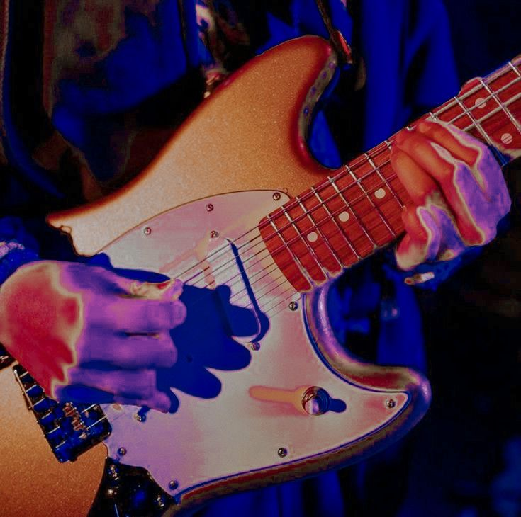

Fender
All things Rock n' Roll
An American icon, Fender was founded in Southern California and has established a worldwide influence that extends from the studio to the stage—and beyond. Everyone from beginners to the world’s most acclaimed artists have used Fender instruments, amps and gear, making the company not only a revered industry leader but a cultural symbol that resonates globally.
Nearly seven decades since founder Leo Fender built his first electric guitar, Fender’s reach transcends instruments and accessories, encompassing a range of innovative digital experiences that fuel musical expression and serve players at every stage–on every stage.
A look at some of the highlights of Fender and music culture as a whole.
- Fender has been around for over 70 years, initially setting the bar for guitars, basses and amplifiers.
- Leo Fender once said that all artists were angels, and it was his, “job to give them wings to fly.”
- The company is proud to carry on his vision–inspiring artists around the world and giving new players the tools they need to start their musical legacy.
Informed by expert instructors from the nation’s top music schools, Fender Play encourages and supports all styles of learning with a step-by-step, song-based approach that makes playing an instrument a more achievable goal than ever before.
Customers
Products
Listens
Branches
Products
Featured Products
Stratocaster
The Fender Stratocaster is a solid-body electric guitar that’s a staple of rock and rhythm and blues music. It’s known for its contoured body, vibrato bridge, and versatility.
Telecaster
The Fender Telecaster, often called “the Tele,” is a classic, mass-produced, solid-body electric guitar known for its simple yet effective design, versatile sound, and durability, making it a workhorse for many musicians across various genres.
Bass
A Fender bass is a type of electric bass guitar, most famously known for the Precision Bass (P-Bass) and Jazz Bass (J-Bass) models, both designed and manufactured by Fender Musical Instruments Corporation.
Who is Leo Fender?
Leo Fender wanted to craft an instrument that was as functional as it was easy to use. It was a primitive-looking object that was tough as nails, its powerful name inspired by another groundbreaking invention: the television. And with its revolutionary electrified tone, it would change the way music was made—forever. When someone asks, “Why Fender electrics?” the answer is clear. But Leo Fender’s legacy didn’t end there. Now fully immersed in the music world, Fender delved deeper into guitars, developing the prototype for a new solidbody alternative to the hollowbody electric favored by swing artists of the day. . The first mass-produced solid-body electric guitar, the Telecaster would change the way music was made forever. Unlike any guitar that came before it, the Telecaster had a bright, clean and cutting sound, with a prominent high end, thick midrange and bass perfectly suited to western swing. That same year, Fender introduced another invention, the Precision Bass®, along with the first bass amp–the Bassman®. Held sideways like a guitar, the P Bass® liberated musicians from the confines of the traditional upright bass. It was fretted for more precise playing and could be amplified, laying the foundation for a revolution in popular music—the electrified rhythm section. As opposed to the “big bands” of the era, Fender’s electric guitars, basses and amplifiers made it possible for smaller groups of musicians to get together and be heard—inspiring the modern rock combo as we know it.
The Precision Bass
In 1951, we wanted to liberate musicians from the confines of the upright bass. And we did it by introducing a brand-new instrument with a bold, new sound. That instrument was the Precision Bass®, a name that would not only become synonymous with rock ‘n’ roll, but also shape its very being. As time went on, we created new instruments to cater to a new, evolving type of musician: the electric bassist. Each one was and still is a driving force behind the greatest moment in music—of every era, of every genre. Period. In 1985, Fender opened its flagship U.S. factory and headquarters in Corona, California, followed by a second manufacturing facility in Ensenada, Mexico in 1987. That same year, the renowned Fender Custom Shop debuted at the Corona facility. Leo Fender had always recognized the importance of an open-door policy for professional musicians, accommodating their requests for specific features on an individual basis. Known as the “Dream Factory” and home to Fender’s Master Builders, the Custom Shop lives up to its nickname, crafting dream instruments for avid collectors and esteemed artists, including Jimmy Page, Eric Clapton, Jeff Beck, Merle Haggard and Stevie Ray Vaughan.
Where it all began
The Fender story begins over 70 years ago in a small Fullerton, California workshop. In 1943, he teamed up with local musician and inventor Doc Kaufmann and formed K&F Manufacturing Corp, producing a limited run of amplifiers and lap steel guitars at the height of the Hawaiian music craze. When the two parted ways a few years later, Fender continued working under his own name, developing the original Princeton, Deluxe and Professional amps in 1946. Forging into the 21st century with an increased focus on digital innovation and artist relations, Fender returned to its Southern California roots in 2016 with its 24,500-square-foot headquarters in the heart of Hollywood. There, just moments from L.A.’s legendary recording studios and music venues, Fender’s executive, marketing, product and digital teams collaborate under one roof. In addition to its flagship headquarters, Fender continues to coordinate administration, product, sales and export operations from its office in Scottsdale, Arizona and international satellite offices in England, France, Australia, Germany, Mexico, Sweden and Japan. Representing the next era in Fender innovation, the company launched Fender Digital in 2015, connecting players with a vast digital ecosystem of products designed to elevate their musical experience. Since its inception, Fender Digital has introduced Fender Tune™ and Fender Tone™ for iOS and Android and debuted the groundbreaking app-based learning platform, Fender Play®.
Most Influential Guitar
In 1954, following the success of the Telecaster, Fender unveiled a guitar that would set the standard for generations to come: the Stratocaster. Named by Fender sales and marketing guru Don Randall, the sleek, Space Age-inspired model incorporated a host of innovations designed to make life easier for modern musicians. The guitar’s contoured body and double cutaway design provided greater comfort and playability, making it easier to access the higher frets and explore a new range of sounds. The guitar also featured the Fender synchronized tremolo (or “vibrato”) bridge, a new innovation that allowed guitarists to bend strings more easily, thus achieving the pedal steel-like sound that was popular among country artists of the day. Essentially unchanged since its debut, the Stratocaster remains the most popular and influential electric guitar ever made, and players across all genres continue to prize its sound, style and versatility. Leo Fender remained a creative force over the next decade, introducing many classic instrument and amplifier designs, including the Jazz Bass®, the Jaguar® and Jazzmaster® guitars and the Twin Reverb® amplifier before selling the company to CBS in 1965.
Contact
Don't miss out!
Address
Scottsdale, Arizona, United States
Call Us
+1 5589 55488 55
Email Us
fender@gmail.com